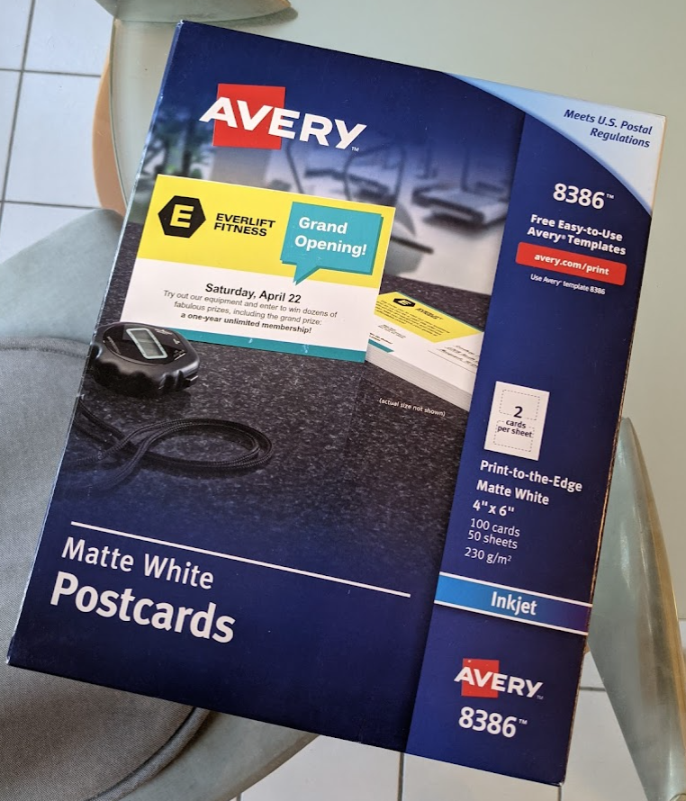
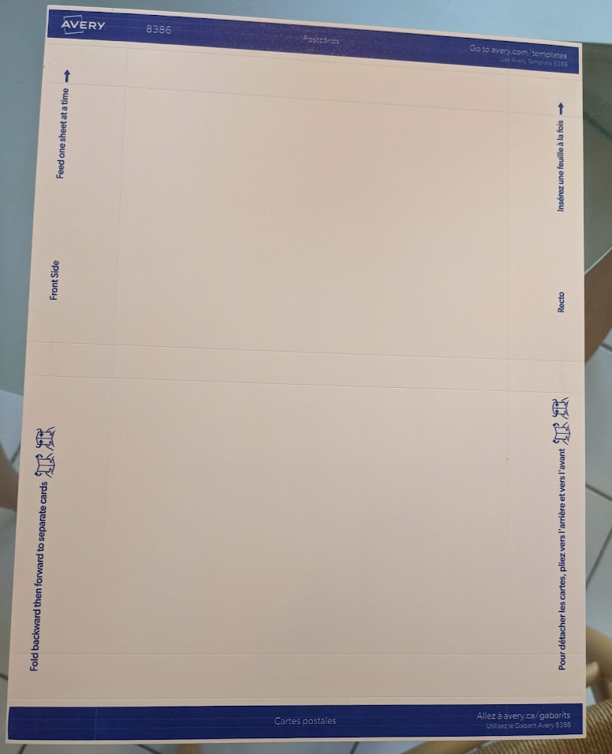
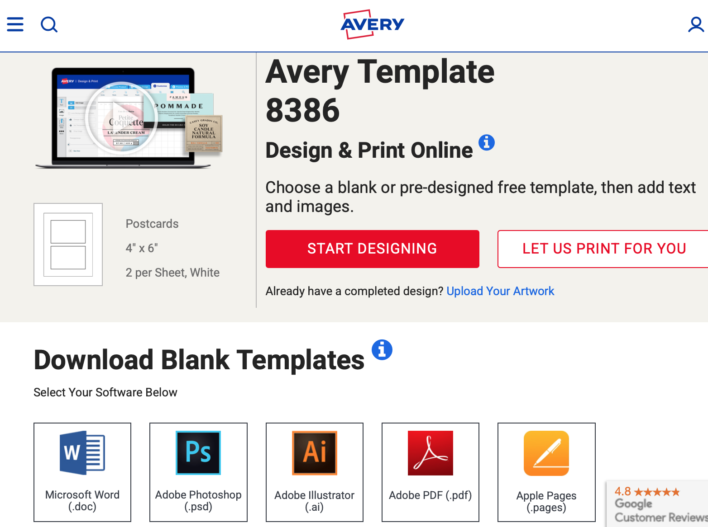
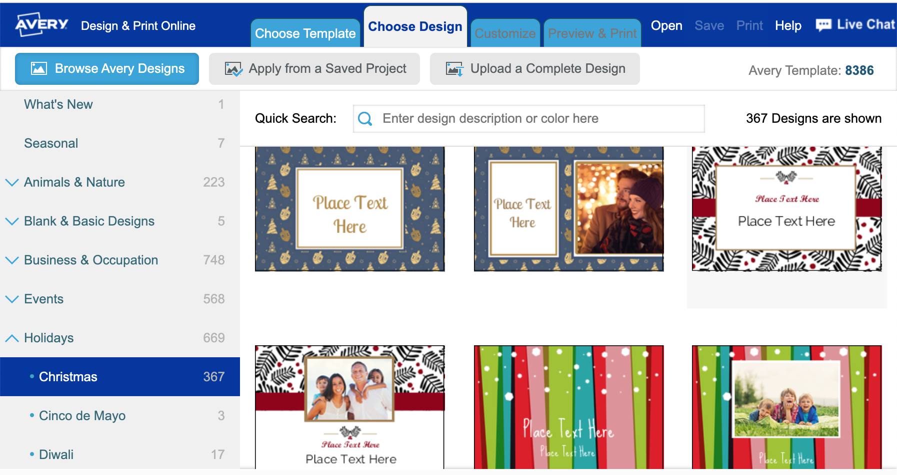
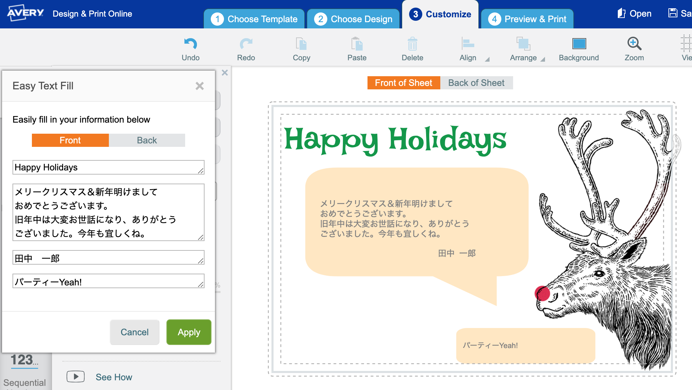
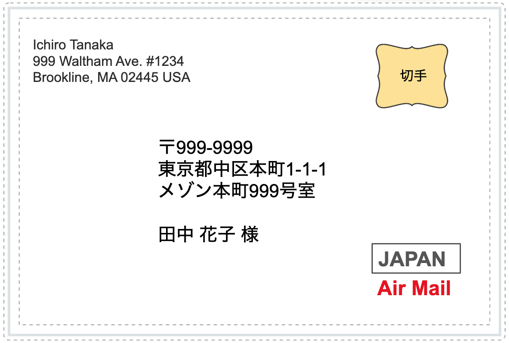
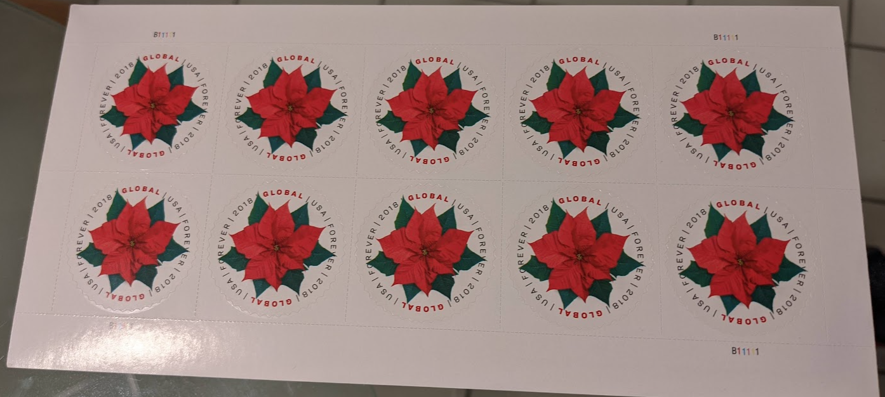

Table of Contents
1 はじめに
今年は転職及び引越しのご挨拶にグリーティングカードを出すことにしました。 日本にいたときには郵便局の「はがきデザインキットWeb版」で年賀状を作成、プリンターで印刷していましたが、アメリカのポストカードにはもちろん対応していません。
色々と調べたところ、ポストカードを自分で作って印刷する人向けに、Avery という会社が用紙を販売、更にポストカード作成用の無料Webサービスまで提供していることがわかりました。これを利用しない手はありません。用紙はポストカード100枚分で$16と若干高めですが、一般的な有償のクリスマスカード作成サービスよりはずっと安価です。
今回は、アメリカのポストカードデータ(両面)を自作し、自宅プリンターで印刷するやり方について書きます。はがきデザインキットWeb版からエキスポートしたcsvの宛先リストを、ポストカード宛名面のPDFファイルに埋め込むために作ったPythonスクリプトも載せておきます。
2 Avery 8386
AmazonやAveryのサイトで探してみると、ポストカードにはAvery 8386番が良さそうです。早速注文してみました。 
どんな用紙かと思ったら、レターサイズの厚紙1枚からポストカード2枚が切り出せるタイプでした。ハサミ等を使わずに手で簡単に切り取れるように、切り取り線のミシン目が入っていて、更にプリンタへの表裏面や向きを間違えないようにガイドが印刷されています。切り取り線で表裏に2,3回折るだけで簡単に切り離せます。とてもよく出来ていて、感心しました。 
3 Avery Webサービス
PCでAvery用ポストカードデータを作成するには、8386番のテンプレートを使用します。Averyサイトの8386テンプレートページ からMicrosoft Wordやその他のアプリケーション用テンプレートをダウンロードできます。 
一方、このページ上で START DESIGNING をクリックしてアカウント登録すると、Webサイト上で8386のテンプレートを使ってポストカードが作成できるようになります。今回はこれを使います。用意されているデザインが選べ、クリスマスカードのデザインだけで350種類以上ありました。 
デザインを選んで、表面と裏面(宛名面)をエディットします。このツールの良いところは、絵が単なるポストカード全面の一枚絵ではなく、パーツに分かれているところです。テキストの編集や追加はもちろん、背景色を変えたり、絵のパーツを動かしたりできます。絵のパーツを端に寄せて写真を貼るなど、自由度が高いのです。PowerPoint等を使ったことのある人なら、普通に使えると思います。
 注意点として、日本語の入力に少し工夫がいります。普通にテキストボックスに日本語を入れようとしてもうまく入りません。そこで、Text > Easy Text Fill の画面で入力するワークアラウンドが必要になります。
宛名面には、自分の住所と名前を入れ、日本向けのため"JAPAN"と赤文字で"AirMail"のテキストボックスを予め配置しておきます。そして肝心な宛先のリストを入力しようとしたところ、家族から「待った」がかかりました。一企業のWebサービスに知り合いの個人情報(名前と住所)を入れるのは不安だと言うのです。郵便局の はがきデザインキット では住所録をクラウドで管理していた気がしますが、郵便局と普通の企業ではデータ漏えいや転用のリスクに差がある、、、かもしれません。
なお、作成したデータはAveryのサイト上で保存でき、自分で印刷するためにPDFファイルとしてダウンロード可能です。今回は宛先情報を入れないデータを作成しました。
4 宛先リスト
これまで宛先住所録は はがきデザインキットWeb版 のデータを使っていました。2年前のWeb版サービス終了の際に、csvファイルとしてデータをダウンロードしてありました。
このcsvファイルは以下のようなフォーマットになっています。
氏名(姓),氏名(名),フリガナ(姓),フリガナ(名),敬称, 郵便番号,都道府県,市区町村,番地・号,建物名, 連名1(姓),連名1(名),連名1(敬称),連名2(姓),連名2(名),連名2(敬称)
これを利用して、宛先面のPDFファイルに宛名と住所を埋め込めないかと考えました。 私は去年の夏に、PDFファイルにページ番号を付ける スクリプト をPythonで作っていました。これを応用できないか試してみます。その時のブログエントリー。
スクリプトを読み直してみたところ、PDFファイルの各ページ中央下部に「3/50」のような文字列を挿入しているだけでした。この挿入位置を変え、文字列を宛先情報に変えれば行けそうな気がいます。
5 日本語フォントの扱い
少し試してみたところ、日本語が全て四角形シンボルになってしまいました。
フォントとして Times-Roman を指定している部分を、日本語フォントを指定するようにしないとダメそうです。とりあえずフォントブックアプリを見て Hiragino Maru Gothic ProN W4 を指定したところ、PythonのKeyエラーになりました。
解決策をしばらく探してみたところ、以下のページを見つけました。
GAMMASOFTブログ - Pythonで日本語をPDFに出力する（ReportLabを利用）
# デフォルトの日本語フォントを用いる方法 # 前述の通り、ReportLabにはHeiseiMin-W3とHeiseiKakuGo-W5が # デフォルトで用意されています。これらを利用するには、以下の # コードでフォントを登録します。 from reportlab.pdfbase import pdfmetrics from reportlab.pdfbase.cidfonts import UnicodeCIDFont pdfmetrics.registerFont(UnicodeCIDFont('HeiseiMin-W3')) canvas.setFont('HeiseiMin-W3', 20)
日本語フォントの登録が必要だったのですね。 これで日本語が表示できるようになりました。GAMMASOFTさん、どうもありがとうございます。
6 Pythonスクリプト
数カ月ぶりにPythonコードを書きました。あまりに久しぶりすぎて、
python -V
をしたら2.17にリンクされていました。macOSのバージョンを上げると、結構な確率でPythonの環境が壊れます。。。しばらく試行錯誤した結果、pyenvのPATHが.zshrcから無くなっていたというオチでした。
export PATH="$(pyenv root)/shims:$PATH"
このように、MacでPythonを使うのは若干面倒なので、VirtualBox等でLinuxを動かして、その上でPythonを使うようにするのが安全かもしれません。今回、試行錯誤の過程で、Pythonを最新の3.10.0に上げました。
それでは、作成したスクリプトです。やっていることは:
- 住所一覧のcsvファイルを読んで、住所宛名listのlistを作る
- PDFファイルを扱う準備
- 住所宛名listのlistからiteratorを作り、2つずつループで回す(1ページにポストカードが2枚あるため)
- 宛名面PDFファイルをベースに、出力PDFページを作成(追加)する
- 住所宛名listが存在すれば出力PDFページの指定位置に埋め込む
前回同様、reportlabとpdfrwのライブラリを利用しています。注意点は、 canvas.drawString で指定するY座標は下側がゼロなところです。
定数値を使っていたりして見苦しいですが。。。
import sys, os, csv from reportlab.pdfgen.canvas import Canvas from reportlab.pdfbase import pdfmetrics from reportlab.pdfbase.cidfonts import UnicodeCIDFont from reportlab.lib.pagesizes import letter from pdfrw import PdfReader from pdfrw.toreportlab import makerl from pdfrw.buildxobj import pagexobj if ( len(sys.argv) != 3 or ".pdf" not in sys.argv[1].lower() or ".csv" not in sys.argv[2].lower() ): print(f"Usage: python {sys.argv[0]} <pdf filename> <csv filename>") sys.exit() """ 住所録csvファイルから宛先リストを作成する。 csfファイルフォーマット: 氏名(姓),氏名(名),フリガナ(姓),フリガナ(名),敬称, 郵便番号,都道府県,市区町村,番地・号,建物名, 連名1(姓),連名1(名),連名1(敬称),連名2(姓),連名2(名),連名2(敬称) リスト構造: address_list list - [adrs1, adrs2, adrs3, etc.] adrs list - ['〒111-1111', '東京都中区本町1-1-1', ' メゾン本町101', '', '田中 一郎 様', ' 花子 様', ' 太郎 ちゃん'] """ address_list = [] with open(sys.argv[2], newline="") as csvf: csv_rdr = csv.reader(csvf) for row in csv_rdr: adrs = [] if row[5]: # 郵便番号 adrs.append("".join(["〒", row[5]])) adrs.append("".join([row[6], row[7], row[8]])) # 住所 if row[9]: # アパート名 adrs.append("".join([" ", row[9]])) adrs.append("") # 住所と名前の間を1行空ける adrs.append("".join([row[0], " ", row[1], " ", row[4]])) # 宛先名 if row[11]: # 連名1 if row[10]: # 連名1名字 adrs.append("".join([row[10], " ", row[11], " ", row[12]])) else: adrs.append("".join([" " * (len(row[0]) + 1), row[11], " ", row[12]])) if row[14]: # 連名2 if row[13]: # 連名2名字 adrs.append("".join([row[13], " ", row[14], " ", row[15]])) else: adrs.append("".join([" " * (len(row[0]) + 1), row[14], " ", row[15]])) address_list.append(adrs) in_pdf = sys.argv[1] out_pdf = os.path.splitext(sys.argv[1])[0] + "_adrs.pdf" canvas = Canvas(out_pdf, pagesize=letter) pdf_rdr = PdfReader(in_pdf) pages = [pagexobj(p) for p in pdf_rdr.pages] in_page = pages[0] # assuming it has only one page # ReportLabに用意されているフォントを登録 pdfmetrics.registerFont(UnicodeCIDFont("HeiseiMin-W3")) it = iter(address_list) next(it) # skip header while True: # 上のカードに住所を埋め込む exit_flag = False try: adrs = next(it) except StopIteration: exit_flag = True if not exit_flag: canvas.doForm(makerl(canvas, in_page)) canvas.saveState() canvas.setStrokeColorRGB(0, 0, 0) canvas.setFont("HeiseiMin-W3", 16) for ln, sline in enumerate(adrs[::-1], start=1): canvas.drawString(180, 500 + ln * 17, sline) else: break # 下のカードに住所を植え込む exit_flag = False try: adrs = next(it) except StopIteration: exit_flag = True if not exit_flag: for ln, sline in enumerate(adrs[::-1], start=1): canvas.drawString(180, 160 + ln * 17, sline) else: canvas.restoreState() canvas.showPage() break canvas.restoreState() canvas.showPage() canvas.save()
7 使い方
PDFライブラリをインストールします。
pip install reportlab pip install pdfrw
上記スクリプトをadrs.pyとしてセーブ。
実行
python adrs.py <pdf filename> <csv fiiename>
Pythonは3.6以降なら動くと思います。開発には3.10を使いました。
8 印刷
Averyの8386テンプレートを使ってWeb上でポストカードデータを作成したら、自分のプリンターで印刷するためにPDFファイルとしてダウンロードすることができます。
これを日本のプリンターで印刷する際に、いくつかポイントがあるので、書いておきます。なお、私は日本から持っていった、ブラザーのDCP-J983Nを使っています。
- レターサイズを指定する(デフォルトはA4）
- Scaleは手動で100%を指定する(デフォルトだとauto fitで97%等になっている)
- 手差しトレイを使って1枚、1面ずつ印刷する。通常トレイと逆で印刷面が上。
- 手差しトレイにはきっちり奥まで差し込む。更に数ミリ自動で送られる。
9 宛名面レイアウト
アメリカのポストカードレイアウト例です。 
左上に自分の名前住所を英語で、中央付近に宛先を書き、右上に切手を貼ります。英語では名前を先に書きます。宛先は日本語で構いませんが、目立つように大きく"Japan"と"Air Mail"を書きます。
面の右側半分を宛先住所用とし、左側半分にメッセージを書く場合もあります。
10 切手を貼る
日本に手紙(約30g以内)やポストカードを送るには、グローバルフォーエバー切手を買います。アメリカはインフレで郵便の値段が上がっていきますが、フォーエバー切手を買えば、ずっと使えます。アメリカ国内用と海外用(グローバル)で価格が異なり、グローバルフォーエバー切手は現在1枚$1.3です。 
切手は10枚組のシートになっています。1枚1枚がシールになっていて、シートから剥がして手紙やハガキに貼ります。日本の切手のように濡らす必要がなく、便利です。
11 終わりに
はがきデザインキットの住所録csvデータを、Avery 8386用のポストカード宛名面PDFファイルに埋め込むという、ものすごくニッチなスクリプトを作りました。需要は無いと思いますが、来年の自分のために記録として残しておきます。